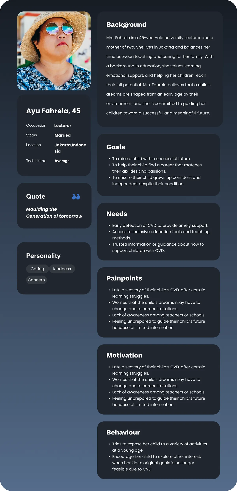
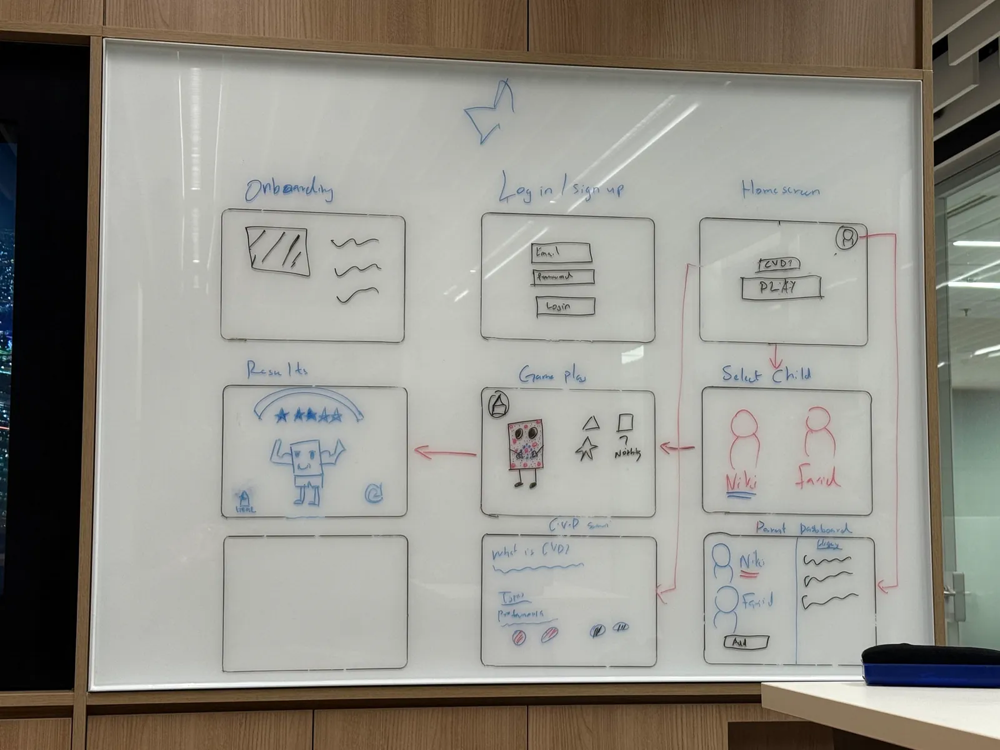
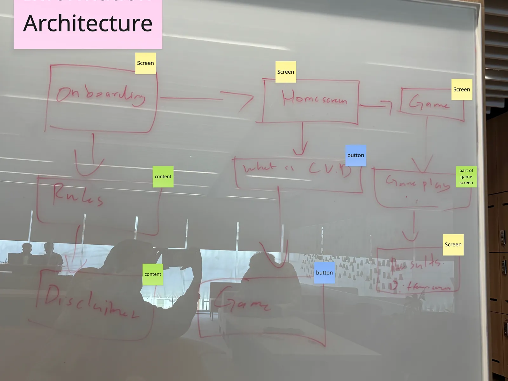
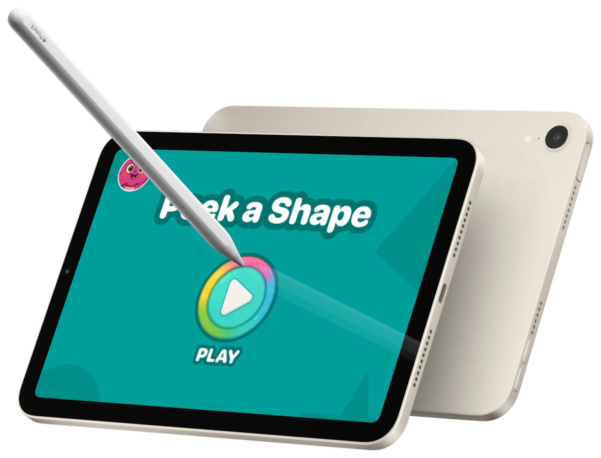
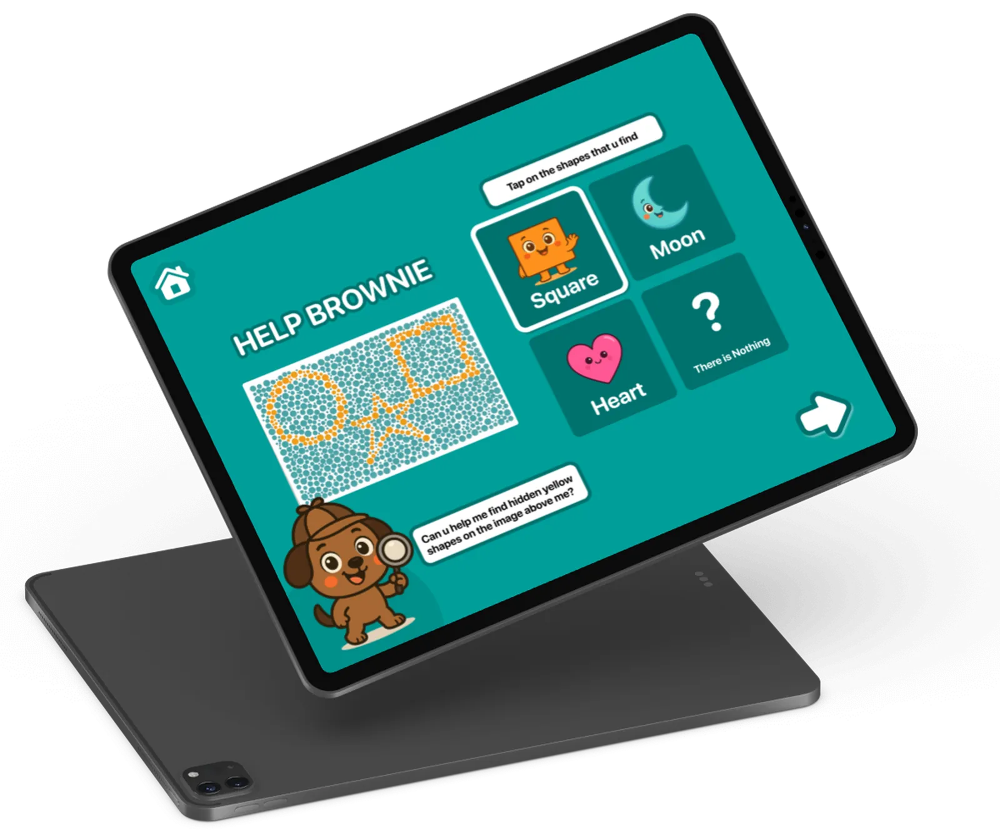
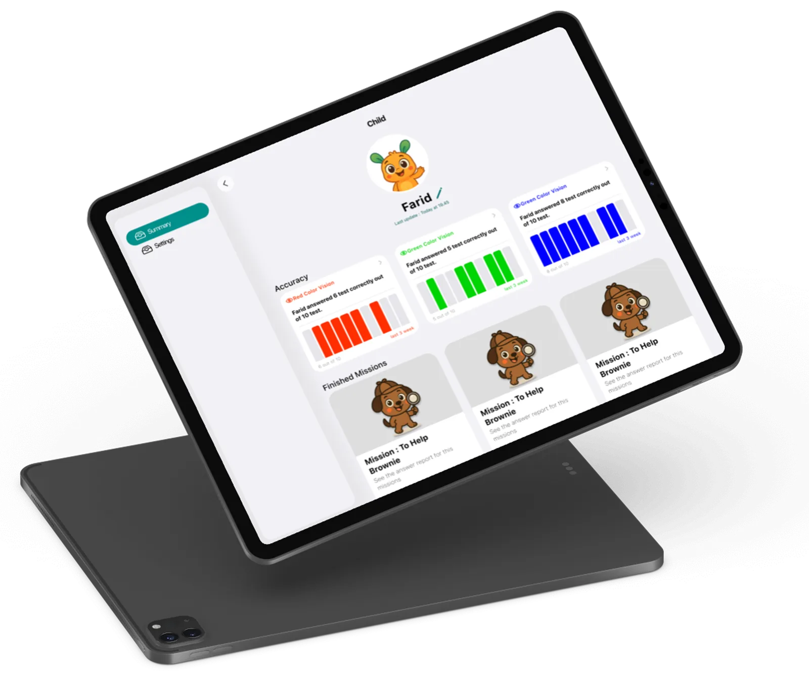
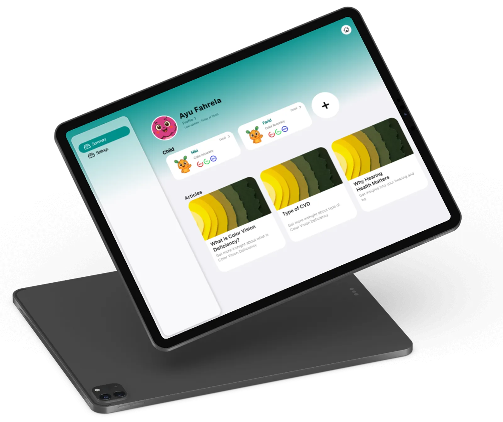

Peek-A-Shape

A fun, engaging shape game for children that helps parents identify colour vision deficiency (CVD) early, so kids can explore other passions and dreams before career paths are set.
The impact of shattering a dream.
— Joe Kim
The problem
Problem statement
Dreams are important, especially when we are young. Many children discover they have colour vision deficiency too late, often when pursuing careers like medicine or aviation. This late discovery shatters dreams and leaves people feeling lost about their future.
The challenge: help parents identify CVD early, so kids can explore alternative passions before career paths are set.
Doctors & stories
Background research
Desk research showed that many people find out about colour blindness late in life, especially when choosing a career. There are many different types of colour blindness, and I needed to understand how to help all of them. I reached out to doctors to learn how they conduct tests and the best methods for testing CVD.
User interviews
I interviewed people who discovered their CVD later in life, particularly those who aspired to medicine or aviation. The interviews revealed common themes around shattered dreams, lost potential, and the importance of early detection, and that children's imagination and curiosity make childhood the perfect time to explore alternative passions.
Findings & persona
Findings
People with CVD often discover it at university, when they want to pursue their dreams. Most wanted to be doctors and pilots. When asked how knowing earlier would have changed their lives:
If I knew earlier, it would help me find other passions early and have other dreams, because children have amazing imagination and that's when they are the most curious about life.
Ayu FahrelaUser persona
A concerned mother of a 5-year-old boy who wants to ensure early detection of any visual challenges. Balancing the parent's need for accurate testing with the child's need for a non-intimidating, playful experience was crucial.

Why a game?
Lo-fi wireframes
The best method for testing CVD is through shapes and numbers: whether they can be identified in colours across the spectrum. That became a game that tests kids with shapes: “Peek-A-Shape.” Why a game? So the kids feel less intimidated.

Information architecture
Parents start with a simple onboarding that explains the purpose and how the test works, then create a child profile. The game begins with easy-to-follow instructions, runs multiple rounds of shape identification with varying difficulty, and ends on a results page with recommendations.

Test & iterate
Parents + childrenUser testing
Parents guided their children through the low-fidelity game. Children engaged better with game-like interfaces, but some shapes and instructions needed to be clearer, and parents wanted more detailed results and guidance on next steps.
Design iterations
I simplified shape identification, made instructions child-friendly with visual cues, and added a progress indicator so children could see how far along they were. Colourful animations made it more rewarding, and a results dashboard explains findings in simple terms with actionable next steps.
High fidelity
High-fidelity design
Bright, playful colours that appeal to children while maintaining scientific accuracy for CVD testing. Rounded shapes and friendly illustrations, large clear typography for young readers, and animations and sounds for positive reinforcement. The parent dashboard is clean and professional, with data visualisations that make results easy to understand.




Results
Impact & results
In early testing, parents reported that their children enjoyed the game and didn't realise they were being tested. Detection aligned well with professional optometric assessments, and several parents discovered their children had mild CVD that would have gone undetected for years.
The app has helped shift the narrative from “shattered dreams” to “redirected potential.”
By making it a game, children feel less intimidated and more engaged in the testing process.
Through an iterative design process, I developed Peek-A-Shape, a game that helps parents identify colour vision deficiency early in their children's lives. Early detection lets kids explore alternative passions and dreams before career paths are set, while keeping their curiosity and imagination.
This project taught me the importance of designing with empathy, balancing scientific accuracy with user experience, and creating solutions that can have a meaningful impact on people's lives.